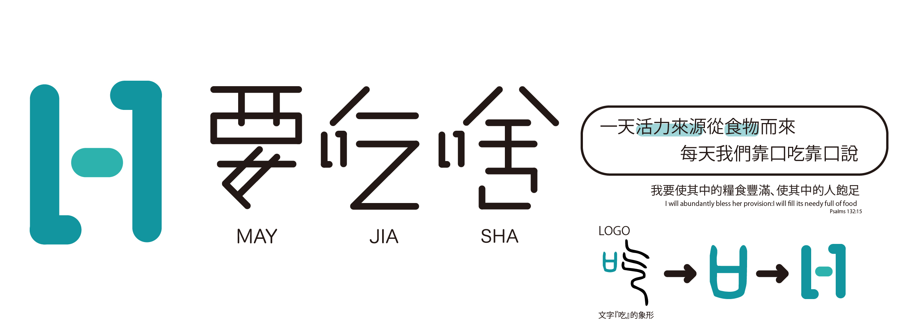

<section class="aboutus_main_box">
  <div class="container-fluid">
    <div class="row">
      
      <div class="aboutus_intro_box">
        <p style="font-weight: bold;">關於 要吃啥 MAY JIA SHA</p>
        <p>我是出生於1990後的年輕人，起初抱著熱情進到職場，剛開始對於做的一切事務充滿成就感，記得有一次公司要員工去考一張證照爭取10%左右的調薪機會，沒想到最後部門裡只有我報名去考，後來才知道公司大部分的老員工都認為就算拿到證照他們10年後20年後也不會跟現在有多大的差別
        有時不經會想我該不會要20、30年持續做這些事吧，回到家想打通電話跟長輩長談卻常常是「穩定就好」「我們也是這樣走來的」這類的話，那時我才發現我只是成為了他們心目中的大人，而不是我想像、想要的!</p>
        <p>於是我想嘗試個IDEA，很幸運的找到幾個曾在內湖工作的夥伴，記得那時中午最常轉過頭問同事「ㄟ，要吃啥」，看到外面是雨是太陽的又不想外食因為要走一段路，怕浪費了短短中午一個小時的休息時間，所以最後還是會跟著大家一起吃每天到大樓一樓擺攤的貴鬆鬆便當，有時還會買到不好吃的，決定成立一個外送平台，目標是帶給大家五種品項，品項種類不多一方面品質容易把關，另一方面也減少選擇上的困難，感謝來自福隆的福興福隆便當願意成為我們第一個品項，預計從熟悉的內湖開始一步一腳印慢慢與各地的大家見面!</p>
        <p>試營運期間(2019 9/16~9/20)</p>
        <p>A. 每日早上10:00結單</p>
        <p>B. 滿5個以上才能外送</p>
        <p>C. 每訂購一個便當優惠訂購者5元(可累積使用在下次訂購)</p>
      </div>
    </div>
  </div>
</section>